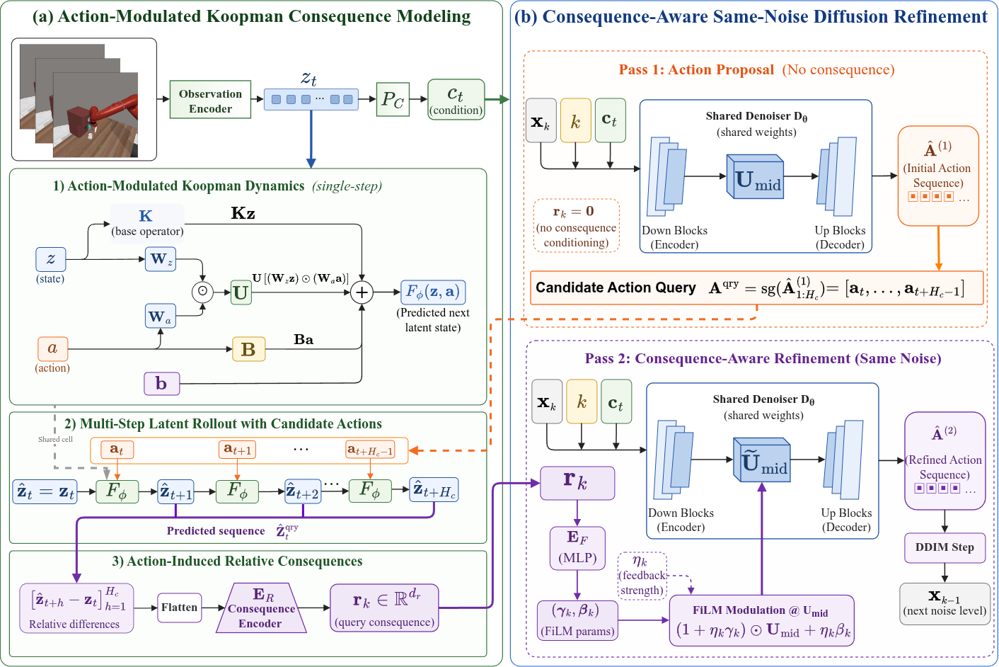
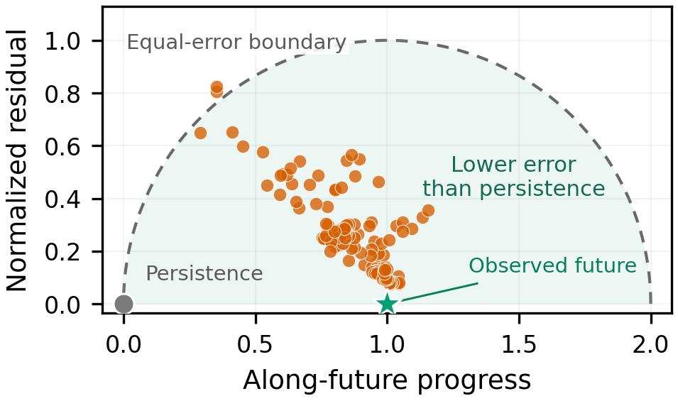
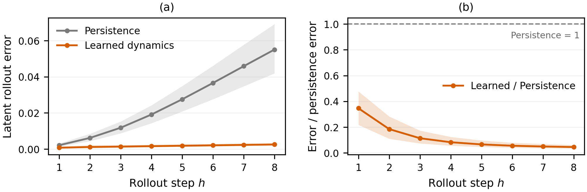
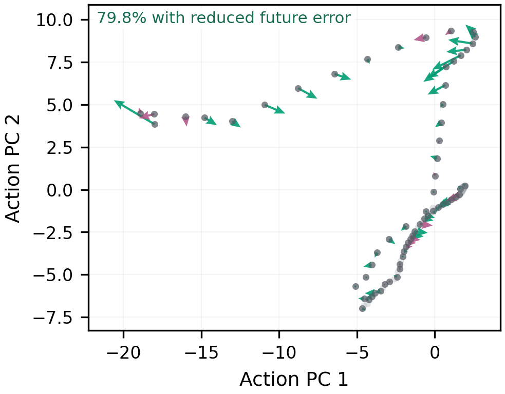
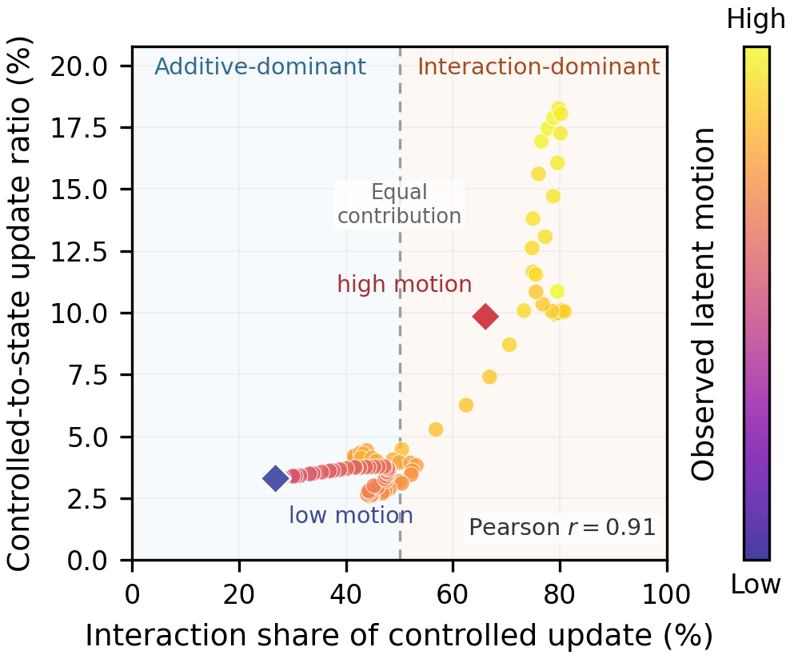

FASK: Future-Aware Visuomotor Policy Learning via State–Action Coupled Koopman Dynamics
Abstract
Diffusion-based imitation learning has emerged as a powerful paradigm for learning expressive visuomotor policies from demonstrations. However, existing action diffusion policies primarily optimize action likelihood without explicitly evaluating whether generated actions induce task-consistent future state transitions. Consequently, they lack the ability to anticipate the future consequences of generated actions, making it difficult to maintain task progress when future state evolution depends on complex interactions or changing task conditions. To address this issue, we introduce FASK (Future-Aware State-Action Koopman), which couples diffusion-based action generation with state-action bilinear Koopman dynamics to predict the future state consequences of intermediate action proposals before execution. Specifically, FASK learns a state-action coupled Koopman dynamics model to predict how candidate actions influence future latent states, enabling the policy to evaluate both action similarity and task-relevant future consequences. The predicted consequence representation is then used as a self-conditioning signal at the same diffusion noise level to refine the action proposal without introducing an additional diffusion transition. Extensive experiments in both simulation and real-world settings validate the effectiveness of FASK.
Method Overview

A shared observation encoder produces the current latent state and diffusion condition. At selected low-noise diffusion steps, the first denoiser pass produces a candidate action sequence. The action-modulated Koopman model rolls out the latent consequence induced by that candidate, and a consequence encoder feeds the result back through FiLM to refine the action at the same noise level before a single DDIM update.
Experimental Results
On MetaWorld, FASK achieves a mean success rate of 79.3%, outperforming AFRO by 3.3 points and its DP3 backbone by 9.6 points. On Adroit, FASK obtains 80% success on Door and 88% on Pen, yielding the best mean success rate of 84.0%.
Table I. Success rates on 14 MetaWorld tasks and two Adroit tasks (%)
| Method | Easy | Medium | Hard | Very Hard | MetaWorld Mean |
Adroit | ||||||||||||
|---|---|---|---|---|---|---|---|---|---|---|---|---|---|---|---|---|---|---|
| Dial Turn | Handle Press | Peg Unplug Side |
Bin Picking | Coffee Pull | Peg Insert Side | Push Wall | Soccer | Sweep | Pick Out of Hole | Push | Stick Pull |
Stick Push | Pick Place Wall |
Door | Pen | Mean | ||
| Diffusion Policy | 60 | 82 | 78 | 16 | 34 | 34 | 56 | 22 | 32 | 0 | 30 | 20 | 66 | 8 | 38.4 | 40 | 16 | 28.0 |
| DP3 | 76 | 86 | 86 | 18 | 90 | 74 | 78 | 38 | 92 | 24 | 74 | 58 | 88 | 94 | 69.7 | 70 | 80 | 75.0 |
| FVP | 72 | 88 | 80 | 16 | 66 | 70 | 36 | 34 | 44 | 26 | 42 | 24 | 84 | 78 | 54.3 | 66 | 76 | 71.0 |
| AFRO | 78 | 98 | 88 | 20 | 92 | 92 | 80 | 36 | 98 | 32 | 78 | 78 | 100 | 94 | 76.0 | 82 | 84 | 83.0 |
| FASK (Ours) | 70 | 96 | 100 | 30 | 100 | 90 | 88 | 40 | 100 | 34 | 86 | 76 | 100 | 100 | 79.3 | 80 | 88 | 84.0 |
| Variant | Handle Press | Push Wall | Push | Stick Pull | Pen | Average |
|---|---|---|---|---|---|---|
| Feedback disabled | 84 | 78 | 76 | 70 | 86 | 78.8 |
| Linear dynamics | 90 | 86 | 84 | 68 | 88 | 83.2 |
| w/o Lcon | 90 | 84 | 82 | 70 | 80 | 81.2 |
| Full FASK | 96 | 88 | 86 | 76 | 88 | 86.8 |
Visualization Analysis
We analyze whether the learned dynamics predict meaningful future evolution, whether consequence feedback improves candidate actions, and how state–action coupling changes across motion regimes.




Simulation Results
1 / 4
Real-World Experiments
Videos are shown at 2× speed.
1 / 3